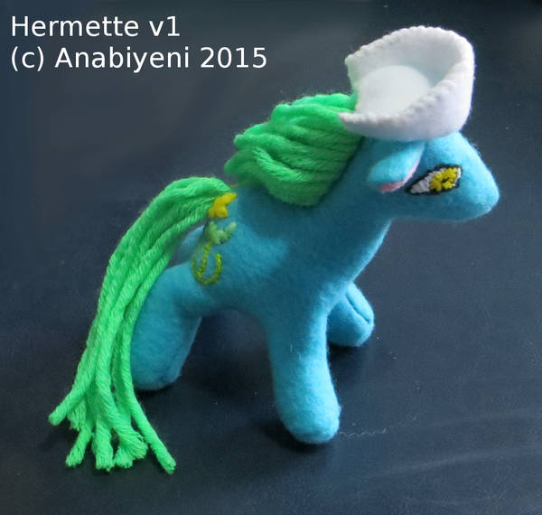

Thursday was a busy day for me. My first doctor’s appointment with a new doctor, followed by meeting with my contemplative prayer group. I liked my new doctor, partly because they are the first healthcare person to take me seriously when I said I think I have autism. To start, my doctor asked me to write a narrative about why I think I have autism, referencing the DSM-5. It’s seven pages long; I sent it last night. Future blog posts may be about my thoughts on masking and various autism self-assessments.
After my doctor’s appointment and my first ever tornado warning (that I recall), during a break in the storm, I headed to church for our monthly contemplative prayer group meeting. Our group is in training through Episcopal House of Prayer to be able to lead prayer groups ourselves in the future.
This month is the first time a member of our cohort of four ran the prayer session without a facilitator. I appreciated that Holly offered to lead first and had the foresight to request a script to follow. (I would have muddled through on my own and handled it far worse than she did.) I remembered to bring my singing bowl, though.
The leader begins and ends each session by chiming the singing bowl. Then the leader briefly introduces the session with a prayer or reading and notes participant tone and expectations. Then we take a 5-10 minutes of silence. After the first silence, one person speaks for 3-5 minutes on whatever comes to mind, generally related to God and spirituality and something in our lives in the last month. On my turn, I spoke about my doctor’s appointment.
After the person finishes speaking, we take two minutes of silence to contemplate their story. Then we spend, in total, 5-10 minutes providing feedback. The point of these feedback portions is to focus on and validate the person whose story we just heard. There are several ways to do this.
- Drawing. I like having index cards to draw a simple image for each person, so they have something tangible to take home after. The images I see are things like moonlight on water or plants sprouting. Sadly I forgot my index cards on Thursday. I tucked them in the case for my singing bowl when I got home, so I don’t forget next time.
- Providing word or short phrase, often without explanation. This appeals to my desire to find and understand patterns. I like the challenge of distilling the essence of someone’s story (or my understanding of it) to one word, like resilience or resonance or adversity. Last month, the one word another member heard in my story was survival. I like hearing what words stand out to others about my stories.
- Asking a question. The question should be thought-provoking, but not leading or judgmental or demanding. There is no expectation that the person answers. I struggle with this one.
- Making an observation. Generally this is to clarify a contradiction you heard in their story or with something they had said earlier. Again, there should be no judgment or expectation of response. The focus should stay on the storyteller, not shift to the person observing. I’m still struggling to learn this method, too.
I think it helps that we are all learning together, so we are tolerant and understanding of each other’s mistakes. I am trying to learn from the others’ mistakes as well as my own and I suspect the others are doing the same.
After the feedback portion, we take about five minutes of silence before the next person speaks. After everyone has spoken and received feedback, we take 5-10 minutes of silence. Then the leader closes with a few words and chimes the singing bowl again.
After the session is over, we always take a few minutes to chat about our experience as we clean up. A few themes have come up several times. Among them, from what I’ve understood:
- We all joined the group because we are open to learning more about ourselves and others.
- Some of us like silence and could use more of it. Others appreciate the chance to learn to live in silence in a non-threatening environment.
- We are all seeking deeper friendships and connections and appreciate that the prayer practice gives us an opportunity to feel heard and validated, and to learn how to help others feel heard and validated.
The next couple months will be led by House of Prayer and will give us an opportunity to meet with the other churches in our cohort. I look forward to hearing about the other churches’ experiences. Then in August, I think, we will lead ourselves again.
I couldn’t find a good beadwork piece for this post, so enjoy one of my stuffed animals instead. The image below is of Hermette, an original nurse My Little Pony. Read more about her and see my other stuffed animals on deviantArt. Sadly, she did not weather the move to Minnesota well and her mane and tail are terribly straggly and frizzy now.
